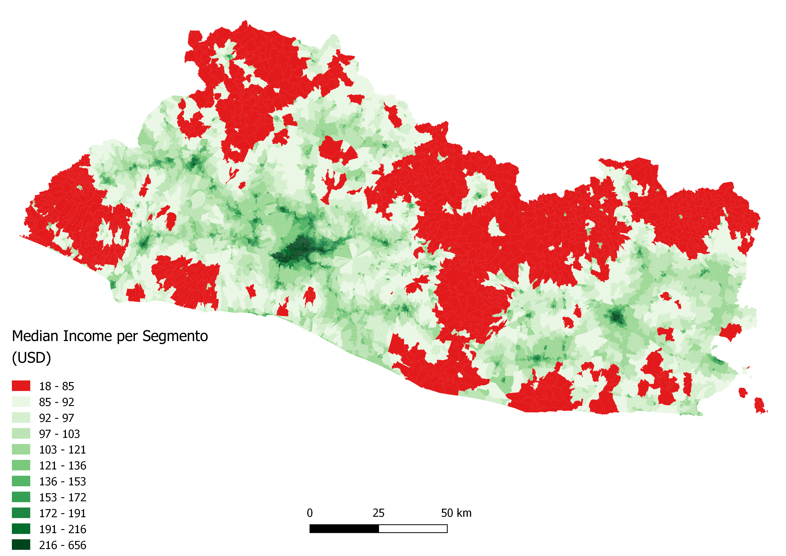
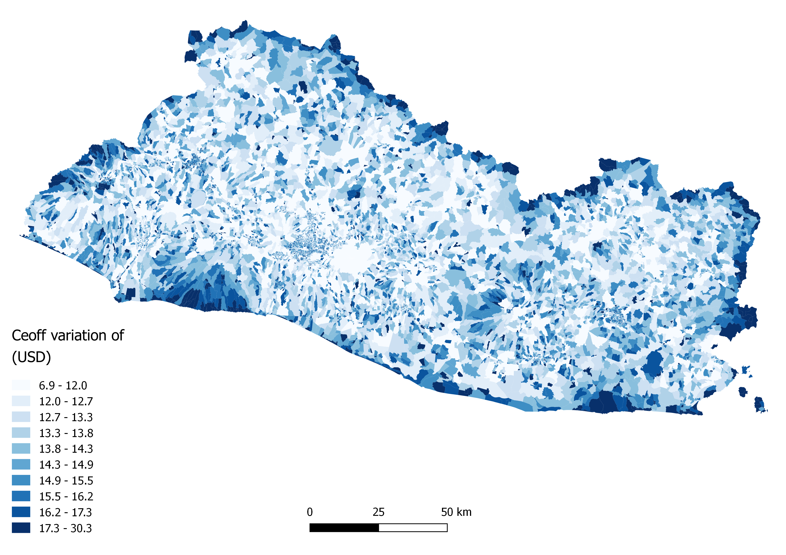
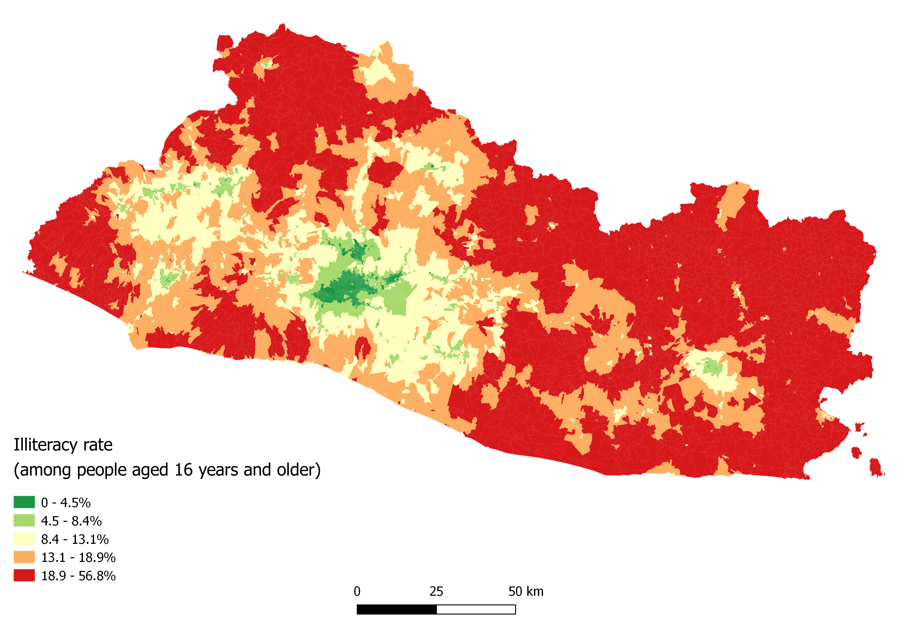
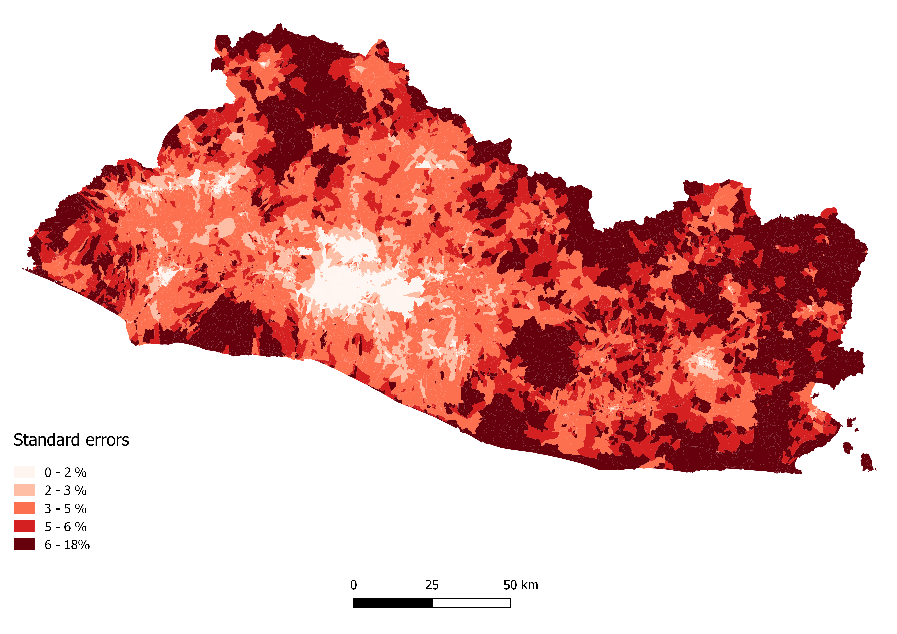
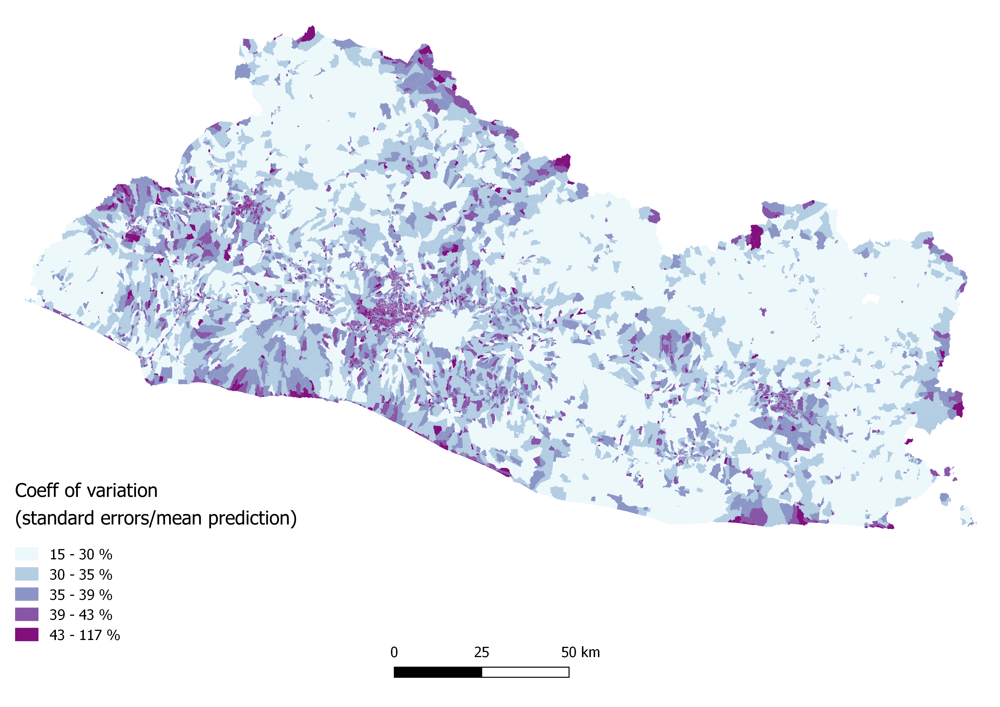

Section 6 Results
It is now finally time to look at the results: * marginal effects * spatial random effects * out of sample prediction * map fitted value * overlay with secondary data
Final outputs will consist of a gridded map indicating predictive values for the indicators of interest, as well as indicators of uncertainty at the grid-cell level. In addition, we provide here code snippets to produce interactive data visualisation, whose results will be discussed and introduced.
6.1 Income
6.1.1 Fixed effects
knitr::kable(summary(besag_income)$fixed[,1:5], digits = 2)| mean | sd | 0.025quant | 0.5quant | 0.975quant | |
|---|---|---|---|---|---|
| intercept | 3.21 | 18.26 | -32.63 | 3.21 | 39.03 |
| factor(AREA_ID)R | 1.53 | 18.26 | -34.32 | 1.53 | 37.35 |
| factor(AREA_ID)U | 1.68 | 18.26 | -34.16 | 1.68 | 37.50 |
| lights_med | 0.15 | 0.02 | 0.11 | 0.15 | 0.19 |
| settlements | 0.04 | 0.02 | 0.00 | 0.04 | 0.08 |
| dist2roadInter | -0.04 | 0.01 | -0.07 | -0.04 | -0.02 |
| Shape_Area | -0.02 | 0.01 | -0.04 | -0.02 | 0.00 |
| lc_tree | -0.04 | 0.02 | -0.07 | -0.04 | -0.01 |
| soil_deg_SDG_index | 0.02 | 0.01 | -0.01 | 0.02 | 0.04 |
| dist2tree_r | -0.02 | 0.01 | -0.04 | -0.02 | 0.01 |
| ### Random effects |
rdm_effects=besag_income$summary.random$ID$mean
segmento_sh_data_model@data$rdm_effects=rdm_effects
segmento_sh_data_model@data$rdm_effects_tr=exp(rdm_effects)
#sp::spplot(segmento_sh_data_model,"rdm_effects_tr")6.1.2 Map the results
We prepare the data for all segmentos
MPIO_CANTON_out=segmento_sh_data@data%>%
filter(segmento_sh_data@data$ingpe>400)%>%
distinct(MPIO,CANTON)%>%
mutate(MPIO_CANTON=paste0(MPIO,CANTON))
segmento_sh_data@data=segmento_sh_data@data%>%
mutate(MPIO_CANTON=paste0(MPIO,CANTON),
top_cantons=ifelse(MPIO_CANTON%in%MPIO_CANTON_out$MPIO_CANTON,"yes","no"),
antiguo_urban=ifelse(MPIO_CANTON=="ANTIGUO CUSCATLANAREA URBANA","yes","no"),
top_cantons=ifelse(MPIO_CANTON%in%MPIO_CANTON_out$MPIO_CANTON,"yes","no"),
outliers=ifelse(ingpe>quantile(ingpe,0.99,na.rm=T),"out","no"),
top_outliers=ifelse(ingpe>600,"out","no"))
ehpm17_predictors=segmento_sh_data_model@data
data_df=segmento_sh_data_model@data[,c("AREA_ID","SEG_ID","DEPTO","ID","top_cantons",
paste(cov_candidates_selected_df$var_income))]
data_df$ID=as.character(data_df$ID) # turn ID to character to avoid having it standardized
# covariates_or=data_df %>%
# mutate_if(is.character,as.factor)
#
# MyStd <- function(x) {(x - mean(x)) / sd(x)} : apply it directly
adj <- caret::preProcess(data_df,
method = c("center",
"scale"),
verbose = TRUE)
adj
covariates_sd <- predict(adj, data_df)
covariates_sd$intercept=1
covariates_sd$ID=as.numeric(covariates_sd$ID)
data_model=data.frame(ingpe=segmento_sh_data@data$ingpe,
covariates_sd)
data_model$pred=data_model$ingpe # create a pred variables equal to ingpe, the outcome variableM_map = inla(formula=formula_selected,
family = "gamma",
data = data_model,
control.compute=list(dic=T, cpo=F),
control.predictor = list(compute=T,link=1),
control.inla =list(int.strategy = "eb")
)dim(data_model)
pred_seg=which(is.na(data_model$ingpe))
M_map_fit=M_map$summary.fitted.values[,"mean"]
M_map_sd=M_map$summary.fitted.values[,"sd"]
segmento_sh_data_model@data$besag_fit=M_map_fit
segmento_sh_data_model@data$besag_sd=M_map_sd
segmento_sh_data_model@data$coef_var=(segmento_sh_data_model@data$besag_sd/segmento_sh_data_model@data$besag_fit)*100segmento_wgs_income=sp::spTransform(segmento_sh_data_model,
"+proj=longlat +datum=WGS84 +no_defs +ellps=WGS84 +towgs84=0,0,0")
segmento_wgs_income@data=segmento_wgs_income@data%>%
select(DEPTO,MPIO,CANTON,ingpe,besag_fit,besag_sd,coef_var,lights_med,gpw_es_TOT,dist2allpubserv,dist2biz,slope,n_obs)
rgdal::writeOGR(segmento_wgs_income,
paste0(dir_data,
"out/map/segmentos_besag_income.geojson"),
driver = "GeoJSON",
layer = 1,
overwrite_layer=T)
# leaflet(all_SEG_simplified)%>%
# addPolygons(weight = 0, # thickness of the line of the border of each segmento
# smoothFactor = 1, # simplifiy the shapefile in order to speed up rendering of the map on the screen
# opacity = 0, # opacity of the segmento border lines
# fillOpacity = 1, # opacity of the segmento areas
# fillColor = ~colorQuantile("RdYlGn", besag_fit)(besag_fit)) # color of the segmento areas: a palette of Greens set)

Average Income per capita

Average Income per capita
6.2 Literacy
6.2.1 Map the results
We prepare the data for all segmentos
cov_candidates_selected_df=read.table(paste0(dir_data,
"out/distance_corr_var/literacy.txt"),
header =T)
MPIO_CANTON_out=segmento_sh_data@data%>%
filter(segmento_sh_data@data$ingpe>400)%>%
distinct(MPIO,CANTON)%>%
mutate(MPIO_CANTON=paste0(MPIO,CANTON))
segmento_sh_data@data=segmento_sh_data@data%>%
mutate(MPIO_CANTON=paste0(MPIO,CANTON),
top_cantons=ifelse(MPIO_CANTON%in%MPIO_CANTON_out$MPIO_CANTON,"yes","no"),
antiguo_urban=ifelse(MPIO_CANTON=="ANTIGUO CUSCATLANAREA URBANA","yes","no"),
top_cantons=ifelse(MPIO_CANTON%in%MPIO_CANTON_out$MPIO_CANTON,"yes","no"),
outliers=ifelse(ingpe>quantile(ingpe,0.99,na.rm=T),"out","no"),
top_outliers=ifelse(ingpe>600,"out","no"))
ehpm17_predictors=segmento_sh_data_model@data
data_df=segmento_sh_data_model@data[,c("AREA_ID","SEG_ID","DEPTO","ID","top_cantons",
paste(cov_candidates_selected_df$var_literacy))]
data_df$ID=as.character(data_df$ID) # turn ID to character to avoid having it standardized
# covariates_or=data_df %>%
# mutate_if(is.character,as.factor)
#
# MyStd <- function(x) {(x - mean(x)) / sd(x)} : apply it directly
adj <- caret::preProcess(data_df,
method = c("center",
"scale"),
verbose = TRUE)
adj
covariates_sd <- predict(adj, data_df)
covariates_sd$intercept=1
covariates_sd$ID=as.numeric(covariates_sd$ID)
data_model=data.frame(illiteracy_rate=1-segmento_sh_data@data$literacy_rate,
covariates_sd)
data_model$illiteracy_rate=data_model$illiteracy_rate+1/10000
data_model$pred=data_model$illiteracy_rate # create a pred variables equal to ingpe, the outcome variableformula_lit=pred ~ -1 + intercept + factor(DEPTO)+dist2biz+lc_tree+
dist2road+dens_all_roads+chirps_ev_sd+dist2tree_r+temp_median +
f(ID, model = "besag",
graph = Segmento.Inla.nb, scale.model = TRUE)
M_map_lit = INLA::inla(formula=formula_lit,
family = "beta",
data = data_model,
control.compute=list(dic=T, cpo=F),
control.predictor = list(compute=T,link=1),
control.inla =list(int.strategy = "eb")
)dim(data_model)
pred_seg=which(is.na(data_model$illiteracy_rate))
M_map_lit_fit=M_map_lit$summary.fitted.values[,"mean"]
M_map_lit_sd=M_map_lit$summary.fitted.values[,"sd"]
segmento_sh_data_model@data$besag_fit_lit=M_map_lit_fit
segmento_sh_data_model@data$besag_sd_lit=M_map_lit_sd
segmento_sh_data_model@data$coef_var_lit=(segmento_sh_data_model@data$besag_sd_lit/segmento_sh_data_model@data$besag_fit_lit)*100segmento_wgs_fitted=sp::spTransform(segmento_sh_data_model,
"+proj=longlat +datum=WGS84 +no_defs +ellps=WGS84 +towgs84=0,0,0")
segmento_wgs_fitted@data=segmento_wgs_fitted@data%>%
select(DEPTO,MPIO,CANTON,besag_fit_lit,besag_sd_lit,coef_var_lit,lights_med,gpw_es_TOT,dist2allpubserv,dist2biz,slope,n_obs)
rgdal::writeOGR(segmento_wgs_fitted,
paste0(dir_data,
"out/map/segmentos_besag_lit.geojson"),
driver = "GeoJSON",
layer = 1,
overwrite_layer=T)
# leaflet(all_SEG_simplified)%>%
# addPolygons(weight = 0, # thickness of the line of the border of each segmento
# smoothFactor = 1, # simplifiy the shapefile in order to speed up rendering of the map on the screen
# opacity = 0, # opacity of the segmento border lines
# fillOpacity = 1, # opacity of the segmento areas
# fillColor = ~colorQuantile("RdYlGn", besag_fit)(besag_fit)) # color of the segmento areas: a palette of Greens set)

Percentage illiteracy rate
 